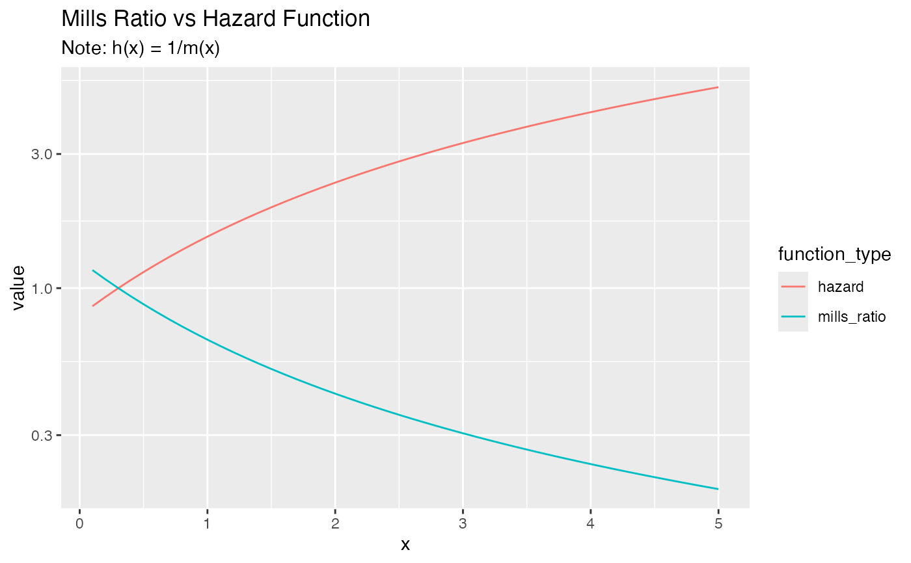

Compare Mills Ratio and Hazard Function
Examples
# Compare for normal distribution
compare_mills_hazard(seq(0, 5, by = 0.5), "normal")
#> x mills_ratio hazard distribution
#> 1 0.0 1.2533141 0.7978846 normal
#> 2 0.5 0.8763645 1.1410778 normal
#> 3 1.0 0.6556795 1.5251353 normal
#> 4 1.5 0.5158156 1.9386772 normal
#> 5 2.0 0.4213692 2.3732155 normal
#> 6 2.5 0.3542651 2.8227448 normal
#> 7 3.0 0.3045903 3.2830987 normal
#> 8 3.5 0.2665678 3.7513913 normal
#> 9 4.0 0.2366524 4.2256071 normal
#> 10 4.5 0.2125706 4.7043198 normal
#> 11 5.0 0.1928081 5.1865040 normal
# Tidyverse visualization
library(dplyr)
#>
#> Attaching package: ‘dplyr’
#> The following objects are masked from ‘package:stats’:
#>
#> filter, lag
#> The following objects are masked from ‘package:base’:
#>
#> intersect, setdiff, setequal, union
library(ggplot2)
compare_mills_hazard(seq(0.1, 5, by = 0.1), "normal") %>%
tidyr::pivot_longer(c(mills_ratio, hazard),
names_to = "function_type",
values_to = "value") %>%
ggplot(aes(x, value, color = function_type)) +
geom_line() +
scale_y_log10() +
labs(title = "Mills Ratio vs Hazard Function",
subtitle = "Note: h(x) = 1/m(x)")
